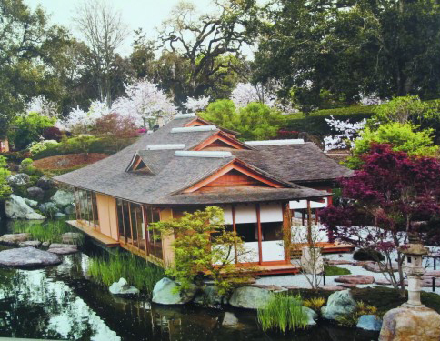

Ellison Estate, USA
History
- Ormer Oracle CEO Larry Ellison is no stranger to the real estate market — he’s been called “the nation’s most avid trophy-home buyer” and has all but taken over entire neighborhoods in Malibu and the Lake Tahoe area.
- When asked by CNBC in 2012 why he would buy more homes than he could possibly live in, Ellison referenced his love of art.
- “I’m going to start these art museums that are basically converted homes, and I have one for modern art, and I have one for 19th century European art, and one for French impressionism,” Ellison said to CNBC. “I’ve got Japanese. I own a home in Kyoto, Japan actually on the temple grounds in Nanzenji that is going to become a Japanese art museum. So, a lot of them are museums.”
- His Japanese Style home in Woodside, Calif., modeled after a 16th-century Japanese emperor’s palace, is worth an estimated $70 million. The 23-acre estate took nine years to design and build, and it was completed in 2004. The individual buildings are relatively small-scale — an almost 8,000-square-foot main house, with a boat dock dividing the public side for entertaining from the private living quarters; two guest cottages; and a handful of auxiliary structures. But the entire project is so immense — 30,000 cubic yards of dirt will be excavated for the 2.3-acre lake; 5,000 tons (10 million pounds) of rocks have been brought in for landscaping — that David Strausberg, superintendent for the main contractor on the site, says on some days it’s hard to even notice what all those workers and all that equipment have accomplished. Although the buildings will be constructed without nails and have mud plastered walls, they are also designed to stand up to a 7.3 Richter scale earthquake. The plans show man-ma structus subordinate to natural features, yet the final product will have no relationship to the meadows and oak forest that previously covered much of the site. The waterfall will have an on-off switch — a fog machine will provide soft focus on demand.